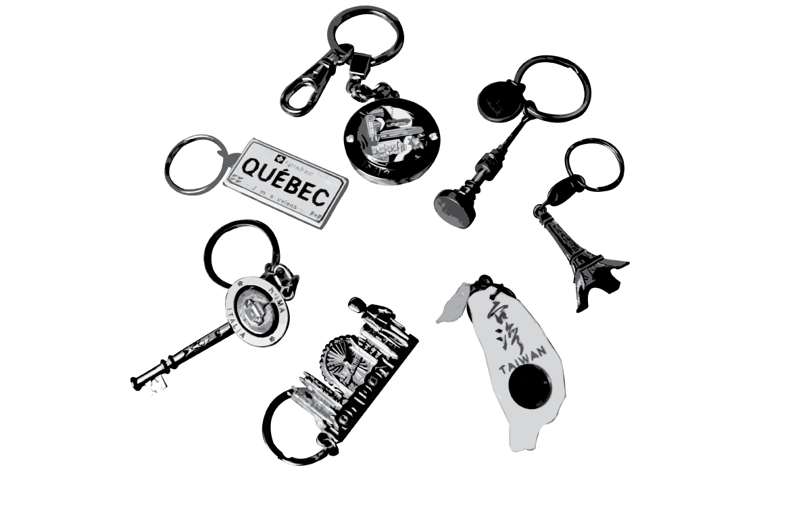
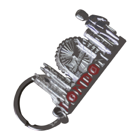
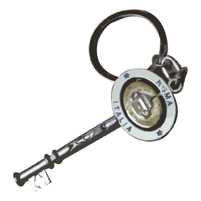
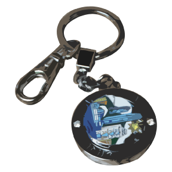
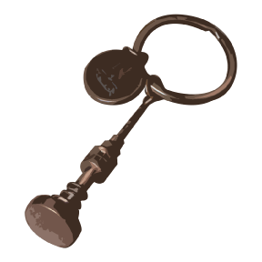
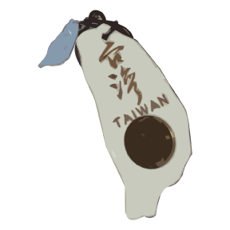

Part 1 of the collection
 One of the first key chain's I got once I moved to Davis. A friend of mine just came back from her study abroad in England and I happened to get London.
Italy, the one time I decided not to go on vacation, some of my family went on a cruise to parts of Europe. This is probably one of my favorite too because the center spins around and keeps me entertained.

I always wanted to go to Canada but doesn't seem like that will happen anytime soon, so I guess this key chain will do. I got this during the end of summer from a friend.
Hong Kong! One of my recently obtained key chains for Christmas...kind of. I also enjoy this one because the top circle spins around, perfect to keep me entertained.
South Korea, Seoul Tower. One of the many South Korean key chains I have gotten from one of my cousins why she was on vacation about a year ago, so this is one of my oldest key chains in the collection.

Paris, and the iconic Eiffel Tower. I got this key chain two years ago and it really means a lot because it was one of the first to start my collection. Also from the same cousin who went to South Korea.
One of the newest key chains I gotten last year, of Fall quarter 2016. I just really like the tecture of this one, mainly everything I've gotten was either metal or plastic, so wood is a nice touch.